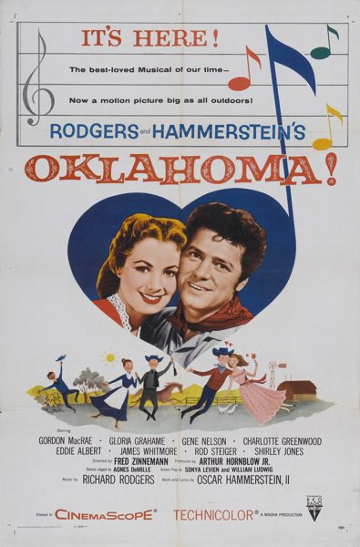
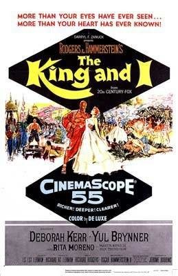
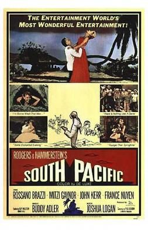

THE STANFORD THEATRE
Now Showing
·
Upcoming
·
Past
·
Search
October 9 - November 8, 2015
Rodgers and Hammerstein
5 bills
October 9 - 11

Oklahoma! (1955)
145 min
October 16 - 18

The King and I (1956)
133 min
October 23 - 25
The King and I (1956)
133 min
October 30 - November 1

South Pacific (1958)
171 min
November 6 - 8
The Sound of Music (1965)
174 min